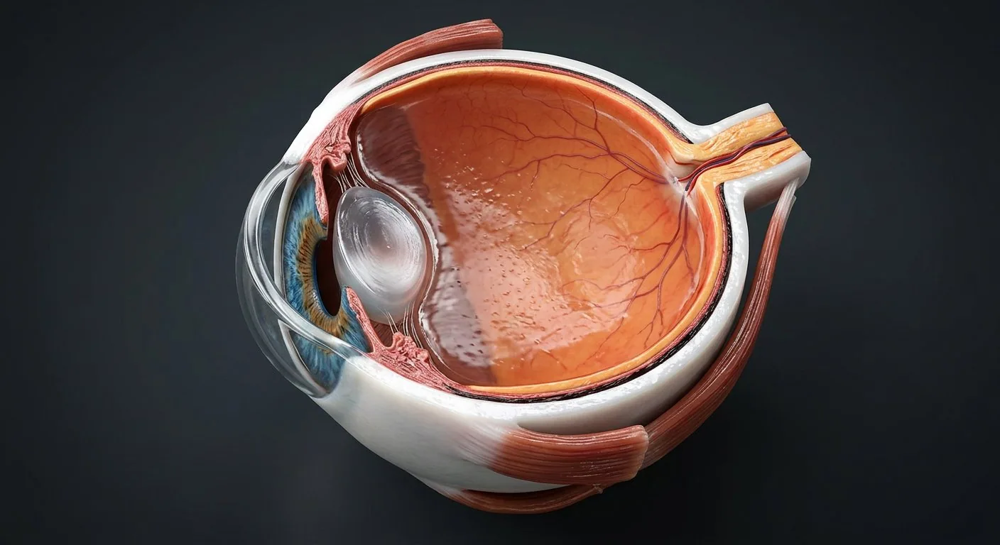

ORGAN → UNDER THE LENS
Eye coats and corneal layers
Tap to compare the organ region with a tissue-level teaching illustration.
Read about Corneal epithelium ↓Sagittal section: an optical instrument that focuses light onto a neural film.

Ciliary body & zonuleAnterior chamber & aqueousCorneaLensIrisPupilScleraOptic nerveOptic discMacula & foveaVitreous bodyRetinaChoroidLight is refracted mostly at the cornea and finely focused by the lens, whose curvature is changed by the ciliary muscle for near vision. The iris adjusts pupil size to control light entry. The image lands on the retina, where rods (dim light, motion) and cones (colour, detail) convert photons into signals through bipolar cells to ganglion cells, whose axons leave as the optic nerve. The fovea, a pit in the macula with cones only, gives sharp central vision. The retina is neural tissue: it is the only place in the body where the central nervous system can be seen directly.
These are educational cutaways, not literal magnifications of an organ pixel or laboratory slides. A ring marks the approximate tissue region; part-specific lines appear only where identifiable.
Tap to compare the organ region with a tissue-level teaching illustration.
Read about Corneal epithelium ↓Tap to compare the organ region with a tissue-level teaching illustration.
Read about Internal limiting membrane ↓These 13 structures describe anatomy related to the chapter’s regional illustration. Each entry separates location, function and a clinical point.
Transparent, avascular, five-layered dome at the front of the eye. Provides about two-thirds of the eye's refractive power.
What it doesBends and transmits light; its endothelium pumps water out to stay clear.
Clinical connectionEndothelial failure causes oedema and cloudy vision; reshaping the cornea (LASIK) corrects refractive error.
The tough white outer coat of collagen, continuous with the cornea anteriorly and the dural sheath of the optic nerve posteriorly.
What it doesMaintains the shape of the globe and anchors the extraocular muscles.
Clinical connectionThins with age and in inflammation (scleritis, a painful red eye linked to autoimmune disease).
The vascular middle layer between sclera and retina, densely packed with capillaries and melanin.
What it doesFeeds the outer retina and absorbs stray light to sharpen the image.
Clinical connectionIts high blood flow makes it a common site for metastatic deposits and for uveitis.
Ten-layered neural film: photoreceptors outermost (light must pass through the inner layers first), then bipolar and ganglion cells.
What it doesTransduces light into nerve impulses.
Clinical connectionRetinal detachment is a surgical emergency — flashes, floaters and a curtain across the field.
A 5.5 mm yellow-pigmented area at the posterior pole; its centre, the fovea, contains cones only and no vessels.
What it doesHigh-acuity central vision for reading and faces.
Clinical connectionAge-related macular degeneration destroys the fovea and central vision while sparing peripheral sight.
Where ganglion axons and the central retinal vessels pierce the sclera. It has no photoreceptors.
What it doesExit point of the optic nerve and entry of the central retinal artery.
Clinical connectionIt is the physiological blind spot; swelling (papilloedema) signals raised intracranial pressure.
About a million myelinated axons wrapped in meninges, running to the optic chiasm. It is brain tissue, not a peripheral nerve.
What it doesCarries visual information to the lateral geniculate body and cortex.
Clinical connectionOptic neuritis can cause painful vision loss and has several causes, including demyelinating disease; new vision loss needs prompt assessment.
A biconvex, avascular, elastic structure of crystallin proteins, suspended by zonular fibres from the ciliary body.
What it doesFine focus: relaxing the ciliary muscle tightens the zonule and flattens the lens for distance; contracting it bulges the lens for near.
Clinical connectionLoss of transparency is a cataract; loss of accommodation with age is presbyopia.
The coloured diaphragm of smooth muscle (sphincter and dilator pupillae) in front of the lens.
What it doesControls pupil diameter and therefore light entry and depth of focus.
Clinical connectionSphincter is parasympathetic (III), dilator sympathetic — hence Horner syndrome gives a small pupil and a fixed dilated pupil suggests III palsy.
The central aperture of the iris — not a structure but a hole.
What it doesAdjusts from ~2 mm in bright light to ~8 mm in the dark.
Clinical connectionAn irregular or keyhole pupil suggests previous surgery or trauma; a relative afferent pupillary defect signals optic nerve disease.
A ring of muscle and ciliary processes behind the iris; the processes secrete aqueous humour and the muscle controls lens shape through the zonular fibres.
What it doesAccommodation and aqueous production.
Clinical connectionAqueous drainage through the trabecular meshwork at the iridocorneal angle determines intraocular pressure — the target in glaucoma.
The space between cornea and iris, filled with clear aqueous humour made by the ciliary processes and drained at the angle.
What it doesNourishes cornea and lens and maintains intraocular pressure.
Clinical connectionBlockage of drainage causes glaucoma: acute angle-closure is a painful red eye with a hard globe and haloes.
A clear collagen-and-hyaluronan gel filling four-fifths of the globe, adherent at the disc, macula and ora serrata.
What it doesMaintains globe shape and holds the retina in place.
Clinical connectionWith age it liquefies and pulls away (posterior vitreous detachment), causing floaters and, if it tugs, retinal tears.
These 7 additional entries give anatomical context. They are deliberately not assigned a photographic pin on the regional image.
Related deep chapters: Eye · microscopic layers, Retina · neural microanatomy.
Surface stratified nonkeratinizing epithelial layer.
What it doesBarrier and smooth refractive surface.
Clinical connectionAbrasion causes pain because the cornea is richly innervated.
Müller-cell endfeet make retinal inner boundary against vitreous.
What it doesSupports vitreoretinal interface.
Clinical connectionEpiretinal traction can distort macula.
Acellular anterior limiting layer beneath epithelium.
What it doesAdds anterior structural support.
Clinical connectionDamage may scar rather than regenerate as normal layer.
Unmyelinated ganglion axons converge toward optic disc.
What it doesConducts output to optic nerve.
Clinical connectionGlaucoma thins nerve fiber layer.
Organized collagen lamellae form most of corneal thickness.
What it doesPrecise collagen arrangement maintains transparency.
Clinical connectionEdema disrupts transparency.
Retinal ganglion somata whose axons become optic nerve.
What it doesFinal retinal output neurons.
Clinical connectionGanglion-cell loss contributes to glaucomatous vision loss.
Basement membrane of corneal endothelium.
What it doesSupports endothelial monolayer.
Clinical connectionCan develop folds with corneal edema.
Short answers grounded in the structures described above. Use the illustrated guide for anatomical context.
The cornea provides much of the eye's focusing power, while the lens changes shape for near and far vision. Light is converted into neural signals by retinal photoreceptors.
The retina is the light-sensitive neural tissue lining the back of the eye. Its ganglion-cell axons bundle together to form the optic nerve.
Transparent, avascular, five-layered dome at the front of the eye. Provides about two-thirds of the eye's refractive power. Function: Bends and transmits light; its endothelium pumps water out to stay clear.
Ten-layered neural film: photoreceptors outermost (light must pass through the inner layers first), then bipolar and ganglion cells. Function: Transduces light into nerve impulses.
Function: High-acuity central vision for reading and faces. A 5.5 mm yellow-pigmented area at the posterior pole; its centre, the fovea, contains cones only and no vessels.
Follow these connected structures and body systems in the illustrated atlas.
 Eye · microscopic layersThree ocular coats, five classical corneal layers, aqueous route, lens suspension, macula and optic disc.↗
Eye · microscopic layersThree ocular coats, five classical corneal layers, aqueous route, lens suspension, macula and optic disc.↗ Retina · neural microanatomyRods, cones, bipolar and ganglion circuits; fovea, optic disc, pigment epithelium and dual blood supply.↗
Retina · neural microanatomyRods, cones, bipolar and ganglion circuits; fovea, optic disc, pigment epithelium and dual blood supply.↗ BrainMidsagittal section: cerebrum, diencephalon, brainstem and cerebellum around the ventricular system.↗
BrainMidsagittal section: cerebrum, diencephalon, brainstem and cerebellum around the ventricular system.↗ EarA pressure-wave collector that turns vibration into nerve impulses and doubles as a gyroscope.↗
EarA pressure-wave collector that turns vibration into nerve impulses and doubles as a gyroscope.↗General anatomy references and related source chapters for continued study. These links do not make the digital illustrations clinical images or certify every anatomical variant.
This educational page is not medical advice and has not undergone formal clinical peer review. Spotted an error? Contact the editor.
Open the realistic interactive plate, label lines, focus view and self-test.